景别、角度与构图
先不让画面动。一帧静止的画面里，你能决定三件事：框多大，从哪看，东西怎么摆。这三件事有一套用了一百年的名字。
先有一个主体
在说框多大之前，先问框里是谁。每一个画面都得有一个主体：观众这一刻该看的那个人、那件东西、那个数字。没有主体的画面，观众的眼睛会四处找，找不到就划走。
对一个长期做内容的账号来说，还有更大的一层主体：贯穿你所有片子的那个固定形象。它可以是出镜的你自己，可以是一个卡通角色，一个抠出来的真人贴纸，一只吉祥物，甚至只是一个固定的声音加一种固定的画法。Kurzgesagt 的每条片里都有那几只圆滚滚的小鸟，观众不看频道名也认得出来。别人记住的往往不是你讲了什么，是“那个谁”。
这件事和 AI 剪辑关系很大。AI 每次都可以给你生成一套新的画面，如果你不规定一个固定的主体，你的十条片子会像十个人做的。所以值得在一开始就定下来：我的片子里，站在画面中间的是谁，长什么样，每次怎么出场。下面要讲的景别，说的就是这个主体在框里占多大。
景别：框多大
景别shot size说的是主体在画面里占多大。它是镜头语言里最基础的一个旋钮，也是你对 AI 说得最多的一个词。同一个人，框大一点是“他在哪”，框小一点是“他在做什么”，再小是“他在想什么”。
下面八张图，前两张来自《疯狂的麦克斯：狂暴之路》，后六张全部来自《爆裂鼓手》结尾的同一场演出。同一个人、同一套鼓、同一个舞台，只是框的大小在变。
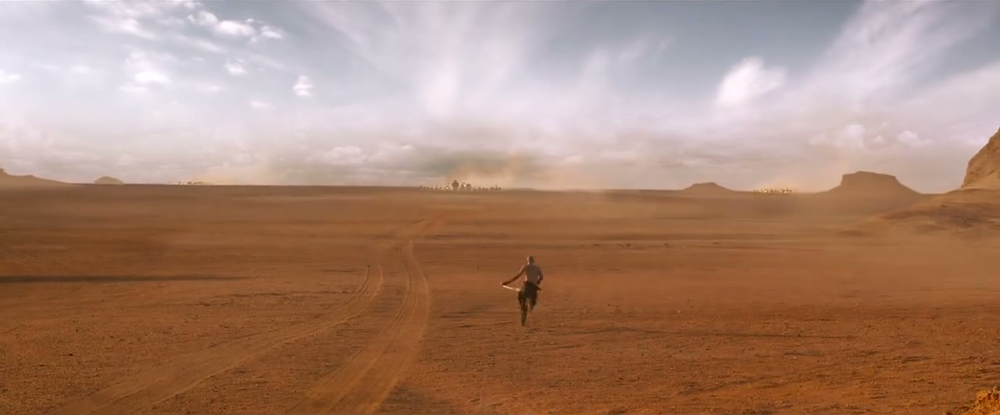
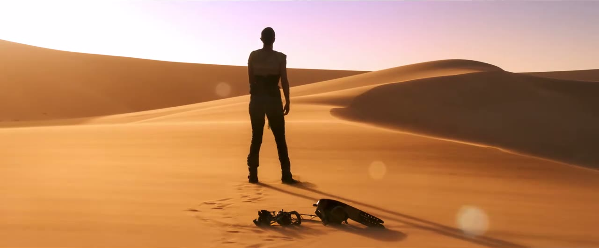
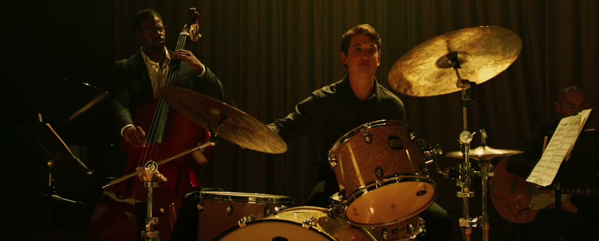
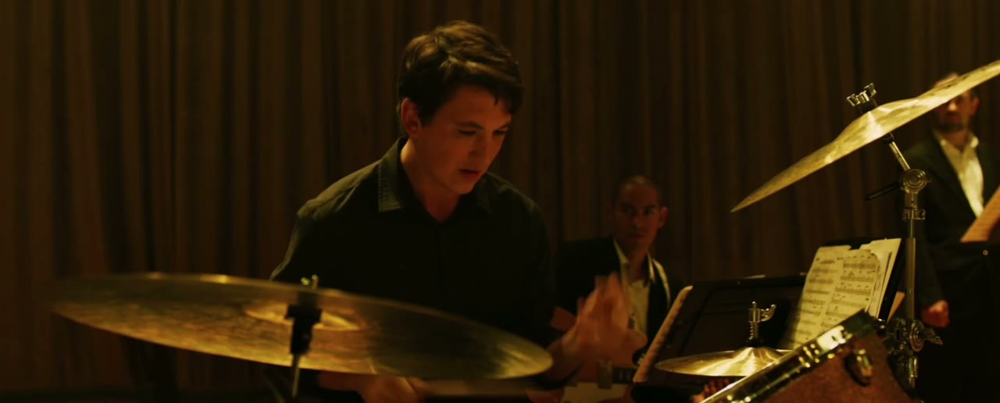
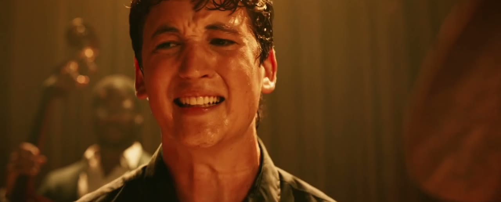
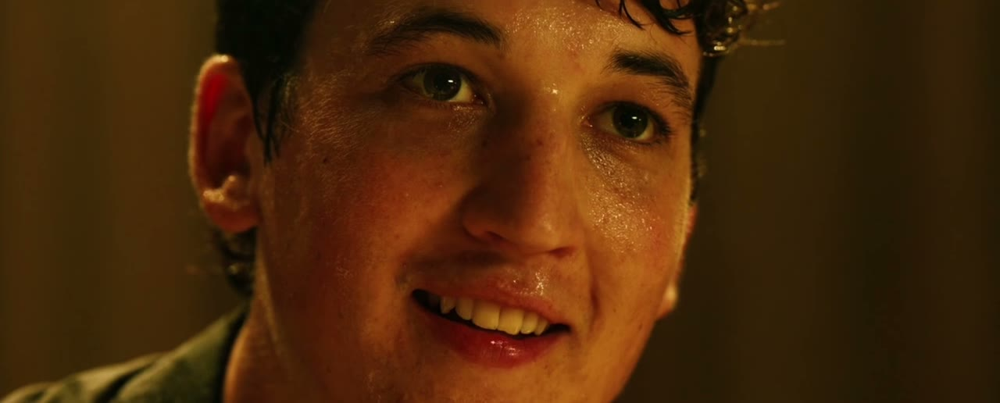
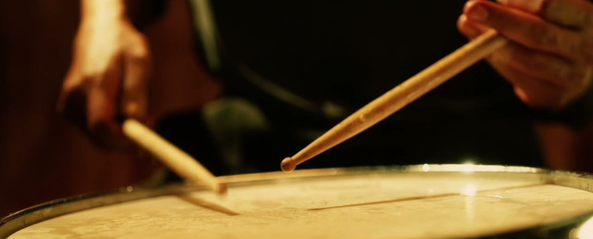
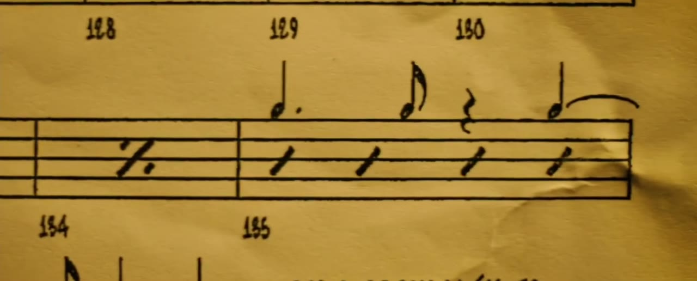
《疯狂的麦克斯：狂暴之路》(2015) 导演 乔治·米勒；《爆裂鼓手》(2014) 导演 达米恩·查泽雷
| 景别 | 英文与缩写 | 框到哪 | 它在说 |
|---|---|---|---|
| 大远景 | extreme long shot · ELS | 人很小或没有人 | 这是什么地方；人在世界里有多小 |
| 远景 / 全景 | long shot / wide shot · LS / WS | 人物全身加环境 | 谁在哪，周围有什么 |
| 中景 | medium shot · MS | 腰以上 | 他在做什么 |
| 近景 | medium close-up · MCU | 胸以上 | 他在说什么，什么表情 |
| 特写 | close-up · CU | 脸，或一个完整的小物件 | 他此刻的感受；“看这个” |
| 大特写 | extreme close-up · ECU | 眼睛、嘴、一个按钮 | 极度的紧张、专注，或一个决定性的细节 |
| 插入镜头 | insert | 场景里的一个物件 | 补充信息：他看到了什么、时间到了 |
三条用得上的规律
越近，情绪越重；越远，越冷静。同一句台词，用全景拍像是旁观，用特写拍像是逼问。所以要让观众“代入”就往近走，要让观众“看清局面”就往远走。很多口播视频全程一个中近景，观众对这张脸的距离感从头到尾没变过，情绪自然上不去。讲到关键那句时切一个更近的景别，是最便宜的强调手段。
景别要跳着接。两个相邻的镜头如果景别差不多、角度也差不多，接在一起会像画面“卡了一下”，这叫跳切，后面剪辑一章会讲。稳妥的做法是相邻镜头至少隔一级：全景接中景，中景接特写。
景别的顺序本身就是叙事。经典的顺序是由远到近：先大远景告诉你在哪，再全景告诉你有谁，然后中景、近景、特写，一步步把观众拉进去。反过来，由近到远，是先给一个让人好奇的细节，再揭开全貌，常用来开场。
没有真人的片子，也有景别
这一点对用 AI 做讲解片的人特别重要。你的画面可能是一张网页截图、一张图表、一段代码，它们同样有景别。
整张截图铺满屏幕，是全景：观众知道“这是一个网页”，但读不了上面的字。推近到其中一段，是中景。再推到一个数字、一个按钮、一行字，是特写。新手最常犯的错，就是把一张密密麻麻的截图整张贴上去停三秒，等于全程只给了一个全景，观众什么也没看清。
角度：从哪看
景别定了框的大小，角度camera angle定的是摄影机相对主体的高低和位置。它悄悄决定了观众和被拍者之间的“地位关系”。
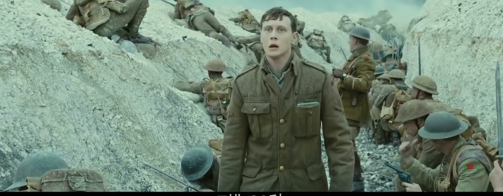
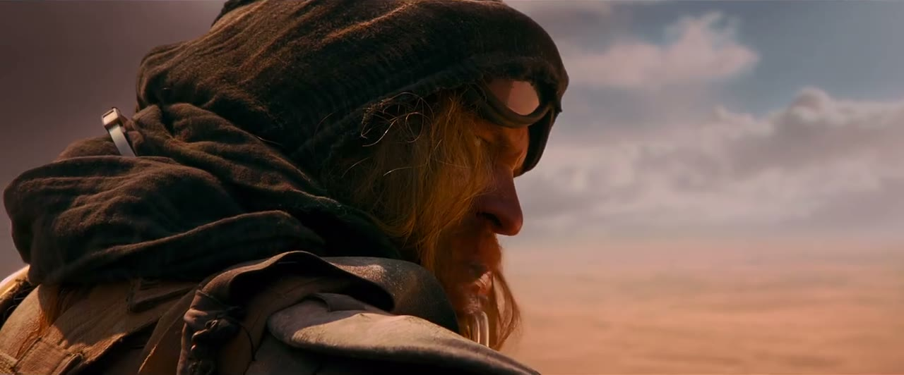
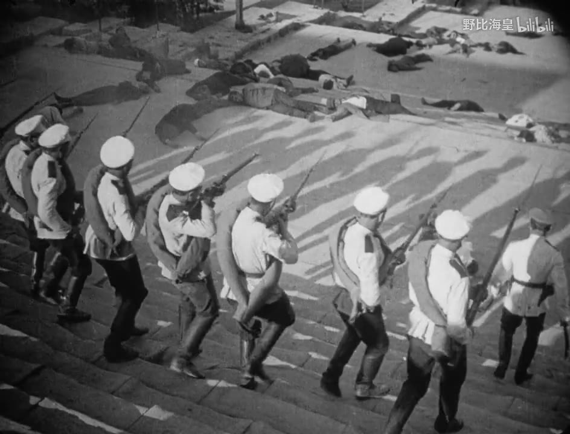
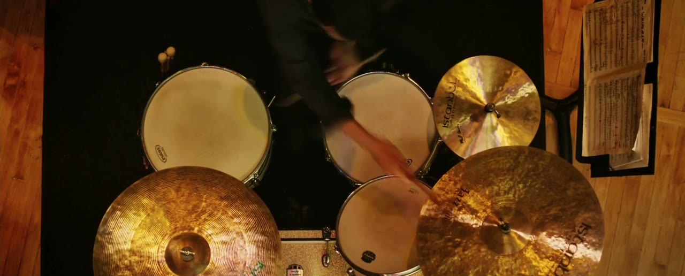
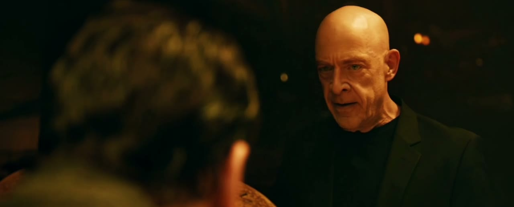
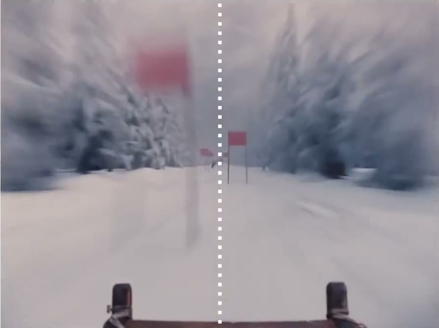
| 角度 | 英文 | 效果 | 常见用法 |
|---|---|---|---|
| 平视 | eye level | 中立、平等 | 对话、口播、大多数叙事镜头 |
| 仰拍 | low angle | 强大、威严、压迫 | 英雄亮相、反派登场、建筑 |
| 俯拍 | high angle | 弱小、无助、被审视 | 人物受挫；交代人群和地形 |
| 顶拍 | overhead / top-down | 客观、图形化、像上帝视角 | 桌面操作、美食、地图感的镜头 |
| 倾斜 | dutch angle | 地平线是歪的。不安、失衡、疯狂 | 悬疑、精神不稳定的时刻；用多了就是“装” |
| 过肩 | over the shoulder · OTS | 把两个人放进同一个关系里 | 对话；看某人在看什么 |
| 主观 | point of view · POV | 我就是他 | 开箱、第一人称操作、游戏、恐怖片 |
口播和 Vlog 里，角度的讲究很朴素：镜头和眼睛平齐，或者略高一点点。镜头放得太低，下巴和鼻孔成了主角；放得太高，人像在仰着头求人。让 AI 处理你的自拍素材时，它改不了拍摄角度，但你可以让它裁切和选片时避开角度不好的那几段。
构图：东西怎么摆
景别和角度定了之后，画面里的元素放在哪、留多少空，叫构图composition。它管的是观众的眼睛先看哪、后看哪、停在哪。构图的道理对实拍和对图文版式是同一套，所以这一节对做动效片的人同样有用。
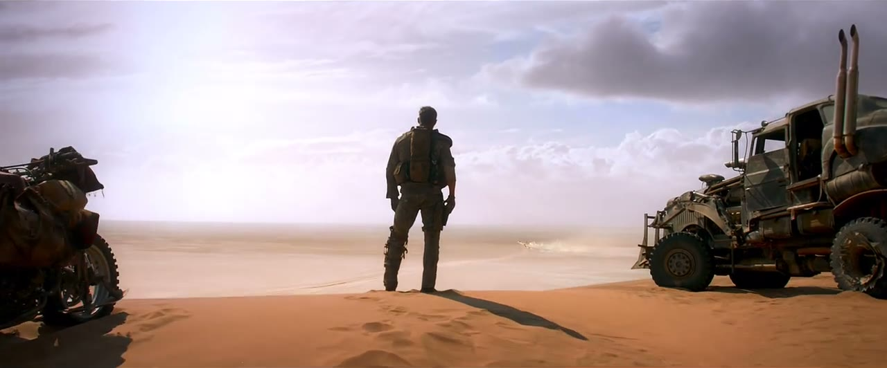
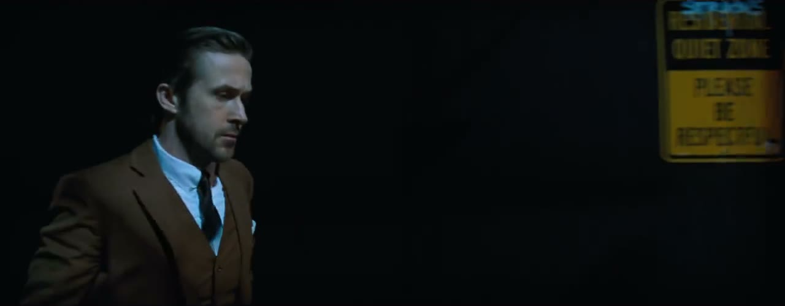
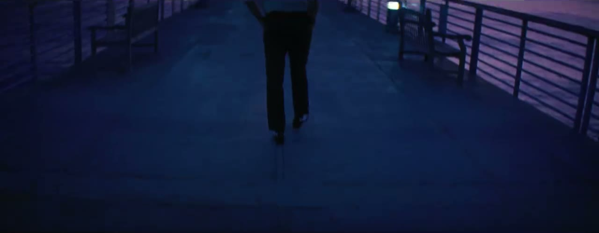
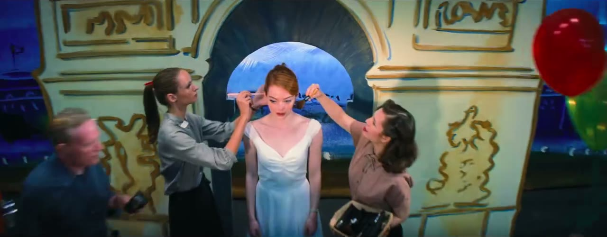
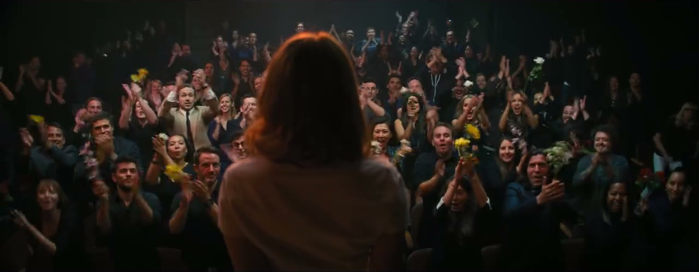
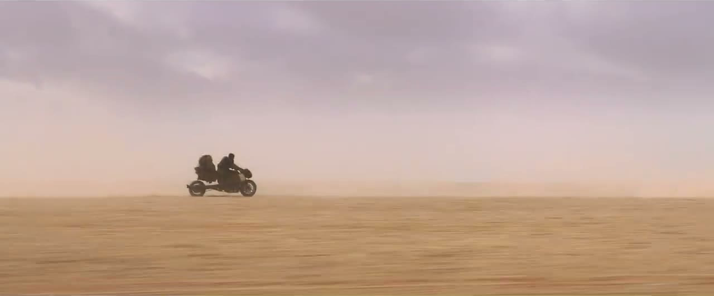
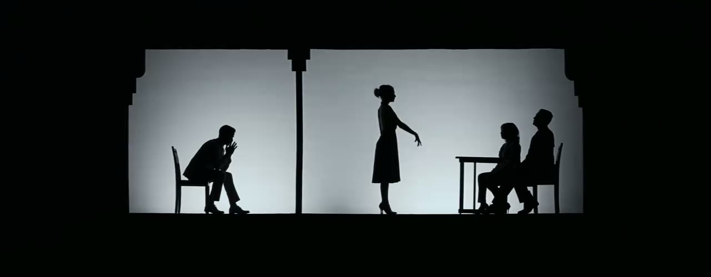
两个不起眼但很要紧的空间
头顶空间headroom：人的头顶到画面上边缘的距离。留太多，人像沉在画面底部；不留，像被天花板压着。一般留出半个拳头到一个拳头高。
视线空间lead room：人往哪边看、往哪边走，就在那一边多留一些空。上面《爱乐之城》那张，人面朝右，右边就是空的。反过来让人贴着他面朝的那条边，会产生被堵住、被困住的感觉，除非你就是要这个效果，否则别这么摆。
AI 在把横屏素材裁成竖屏时，最容易把这两个空间裁没：人脸顶着上边，或者鼻子贴着画框。你可以明确要求它保留。
图文和动效画面的构图
一屏字加图，本质上也是构图问题，只是换了一套说法：
| 版式上的说法 | 对应的构图道理 | 怎么要求 |
|---|---|---|
| 对齐 | 画面里的隐形线条。所有元素的边缘落在少数几条线上，画面就整齐 | “所有文字左对齐到同一条线，图片的左边缘也对到这条线。” |
| 留白 | 负空间 | “四周留 8% 的边距，元素之间的间距比元素内部的间距大一倍。” |
| 层级 | 视觉重心：最大、最深、最亮的先被看到 | “标题是正文的 2.5 倍大。一屏只有一个最大的东西。” |
| 亲密性 | 有关系的东西靠在一起 | “图和它的说明文字贴近，和别的图拉开。” |
| 视觉动线 | 引导线。眼睛的移动路径 | “从左上的标题，到中间的图，到右下的结论，按这个顺序依次出现。” |
焦距和景深：画面的“质地”
这两个词来自镜头的光学特性。你不需要懂原理，只需要认得它们带来的两种观感，因为“电影感”有一半来自这里。
广角和长焦
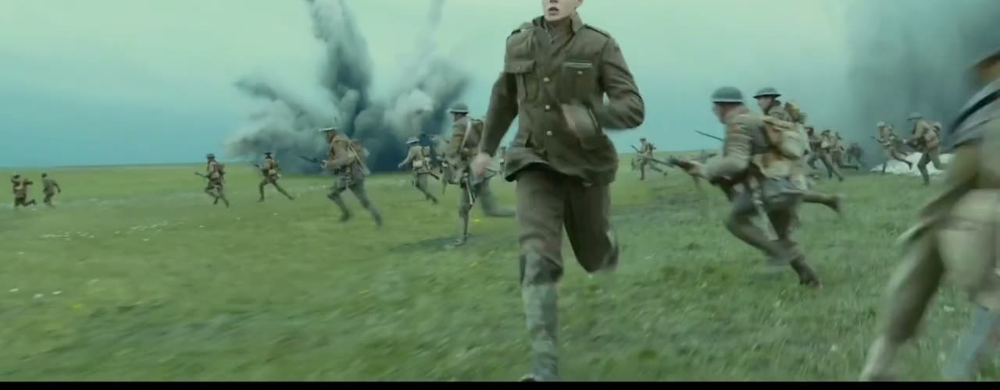
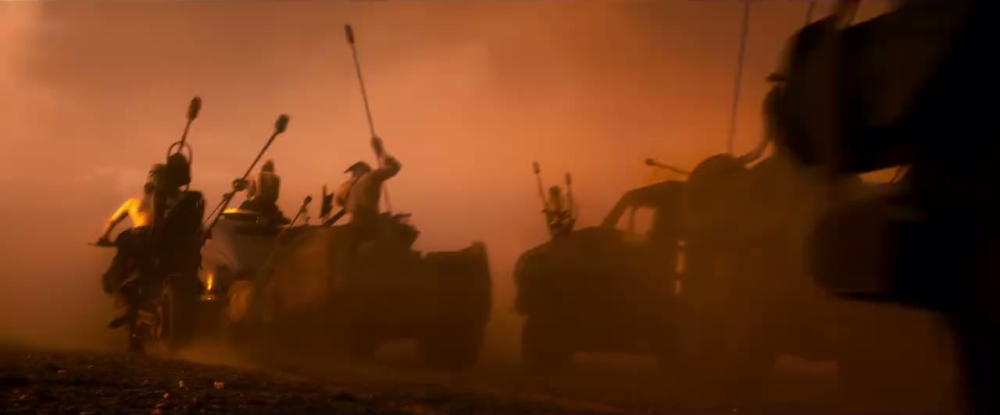
| 广角 wide lens | 长焦 telephoto | |
|---|---|---|
| 视野 | 宽，装得下很多东西 | 窄，只取一小块 |
| 空间感 | 夸张纵深，前后距离被拉大 | 压缩纵深，前后贴在一起 |
| 离人近时 | 脸会变形，有冲击力和喜感 | 脸型自然好看，所以人像多用它 |
| 感觉 | 身临其境、动感、有时显得廉价（手机默认就是广角） | 旁观、精致、有距离 |
浅景深和深景深
景深depth of field是画面里清楚的范围有多“厚”。浅景深就是只有主体清楚、前后都糊掉，也就是常说的“背景虚化”。深景深是从近到远全都清楚。
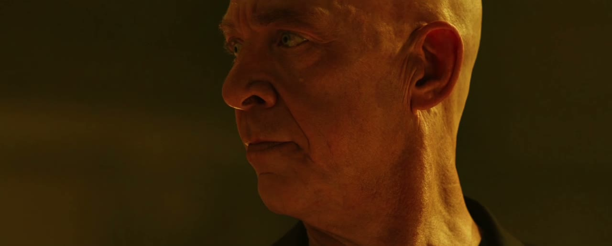
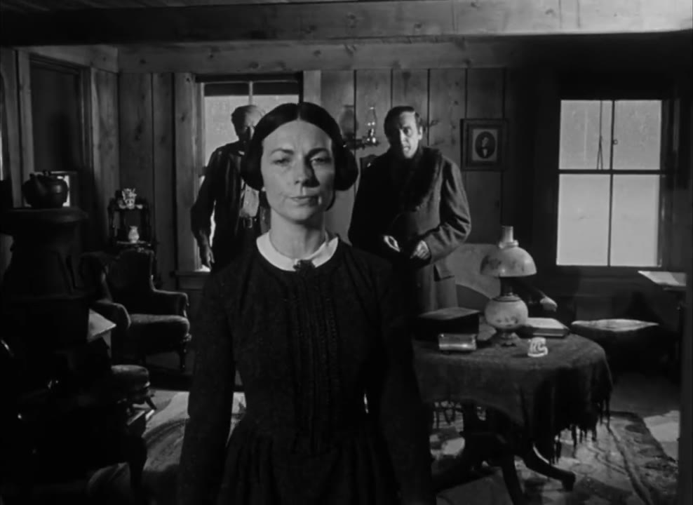
浅景深的作用是替观众做选择：只有一个东西是清楚的，眼睛就没有别的地方可去。深景深则把选择权交给观众，适合画面里有多层信息同时发生的时候，比如前景一个人在说话、远处另一个人在偷听。
在没有实拍的动效画面里，这个原理照样能用：想突出一个元素，就把其他元素调暗、调模糊、调小。行内叫“压背景”。它比给重点元素加描边、加发光要高级得多，因为你是在做减法。
这一章的词，怎么组合起来说
描述一个静态画面，把三件事各说一句就够了：景别 + 角度 + 构图，再加上你想要的质地。
如果你用 AI 生成图片或视频素材，这些词可以原样写进提示词里，生成模型认得它们，而且比“好看的”“专业的”管用得多。
片例截图与片段仅用于学习与评述，版权归原作者与出品方所有，出处见片单与出处。